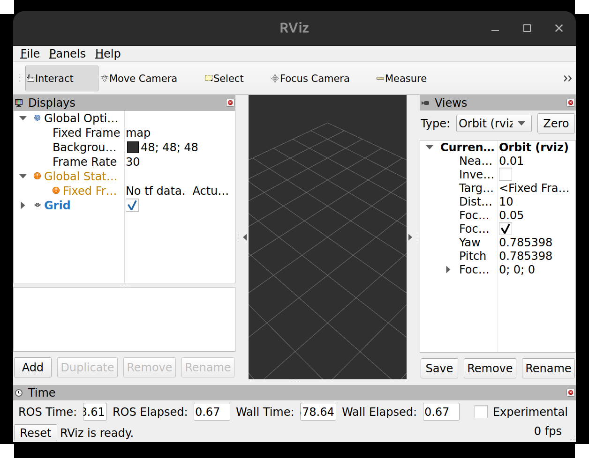

A0 · The course environment
Build one Docker image that holds everything the course needs, run it, and prove that it works.
1. Goal
At the end of this lesson you will have:
- a script-verified computer that can run the course,
- a Docker image called
ros2-tutorial:jazzywith ROS 2 Jazzy, Gazebo, MoveIt 2 and the Kinova software built in, - a shell inside a container made from that image,
- proof that two containers can exchange ROS 2 messages, and that a window (RViz) opens on your desktop,
- a clear picture of where your files live.
Nothing here is about robots yet. This is the foundation: if it works, every later lesson works the same way on your computer as on ours.
2. Concepts
Why Docker
ROS 2, Gazebo, MoveIt 2 and the Kinova packages must all be the right versions for each other. Installing them by hand on your own system is slow and breaks easily. Docker lets us ship one frozen setup that behaves the same on every computer, and nothing is installed on your own system except Docker itself.
Image and container
- An image is a frozen, read-only copy of a whole system (files and programs). You build it once. Ours is about 8.65 GB.
- A container is a running copy made from an image. Start as many as you like from the same image.
- When a container stops, everything you changed inside it is thrown away. Our run script starts containers with
--rm, which deletes the container on exit. Only files in the folder we share from your computer survive (see below).
What is in the image
Software gets into the image in one of two ways:
- Ready-made packages, installed with the system's package manager (
apt). They all end up in one folder,/opt/ros/jazzy. - Built from source: we download the code and compile it ourselves, into a separate folder called a workspace,
/opt/kortex_ws. We do this because Kinova publishes its ROS 2 Jazzy packages as source code only, and its simulation instructions also build the Gazebo connection packages from source.
| Software | How it is installed | Where in the image |
|---|---|---|
| ROS 2 Jazzy (the robot software framework) | ready-made packages | /opt/ros/jazzy |
| MoveIt 2 (motion planning) and RViz (3D viewer) | ready-made packages | /opt/ros/jazzy |
Gazebo Harmonic (the simulator, the gz command) | ready-made packages | /opt/ros/jazzy |
ros_gz and gz_ros2_control (connect Gazebo to ROS 2) | built from source | /opt/kortex_ws |
Kinova ros2_kortex (the arm's description, drivers and launch files) | built from source | /opt/kortex_ws |
A folder of ROS 2 software only becomes usable in a terminal once it is sourced: a small script in each folder (setup.bash) that tells the shell where to find its programs. docker/run_ros2.sh sources both folders for you, so inside the container everything just works.
How the pieces connect
What the run script does
docker/run_ros2.sh is a short shell script that builds one long docker run command for you, so you never type it. In short, it starts a container from the image and:
- runs it as your user, so files it creates in
/workspaceare yours; - puts it on your network and sets the same
ROS_DOMAIN_ID(a number from 0 to 101, default 0) for every container, with UDP messaging, so containers find each other; - shares the course folder as
/workspace; - gives it your display and GPU, so RViz and Gazebo can open windows;
- deletes the container when it stops, and sources both software folders so the commands are found.
Optional: read the script piece by piece
For the curious. Open the file in an editor to see it whole; here we go through it in order. The … lines mark parts of the file that are skipped in that excerpt. You can skip this and come back to it later.
Start and safety switches
#!/usr/bin/env bash
# Open a shell in the course container (ROS 2 Jazzy + Kinova workspace + Gazebo + MoveIt), repo mounted at /workspace.
# With arguments, runs them as a command instead (e.g. docker/run_ros2.sh ros2 topic list).
# Build the image first: docker build -t ros2-tutorial:jazzy docker/ Check the machine: scripts/check_machine.sh
set -euo pipefail- The first line says: run this file with
bash. Lines starting with#are comments for humans. set -euo pipefailturns on three safety switches.-e: stop at the first command that fails.-u: using a variable that was never set is an error (this catches typos).pipefail: a chain of commands joined with|counts as failed if any part failed. Without them a script happily carries on after an error.
Three settings
IMAGE="${IMAGE:-ros2-tutorial:jazzy}"
REPO="$(cd "$(dirname "${BASH_SOURCE[0]}")/.." && pwd)"
DOMAIN="${ROS_DOMAIN_ID:-0}"IMAGE: which image to start.${IMAGE:-ros2-tutorial:jazzy}means "use the value ofIMAGEif one was set, otherwiseros2-tutorial:jazzy".REPO: the full path of the course folder, worked out from where the script itself sits.${BASH_SOURCE[0]}is the script's own path,dirnamegives its folder (docker/),/..goes one folder up, andcd … && pwdturns that into a full path. This is why the script works wherever you run it from.DOMAIN: the ROS domain number, taken fromROS_DOMAIN_IDif you set it, otherwise0. This is whyROS_DOMAIN_ID=5 docker/run_ros2.sh ...in the exercise changes the domain. Valid numbers are 0 to 101; programs only see each other when they use the same number.
What to run inside the container
if [ "$#" -eq 0 ]; then CMD=(bash); else CMD=("$@"); fi$# is the number of words you typed after the script name. With none, the command to run is bash, which gives you a shell. Otherwise it is all of your words ("$@"), so docker/run_ros2.sh ros2 topic list runs ros2 topic list.
Terminal or not
TTY=(); if [ -t 0 ]; then TTY=(-it); fi # only ask for a terminal when there is one[ -t 0 ] is true when the script is connected to a real terminal. Then -it (interactive, with a terminal) is added, so typing and Ctrl+C work inside the container. If another program calls the script, there is no terminal, and asking Docker for one would fail, so the option is left out.
Letting the container draw windows
# GUI tools (RViz, Gazebo): share the X display through a copy of your X authorization (no `xhost +`).
GUI=()
if [ -n "${DISPLAY:-}" ] && command -v xauth >/dev/null; then
XAUTH="$(mktemp)"; chmod 644 "$XAUTH"
xauth nlist "$DISPLAY" 2>/dev/null | sed -e 's/^..../ffff/' | xauth -f "$XAUTH" nmerge - 2>/dev/null || true
GUI=(-e DISPLAY="$DISPLAY" -e XAUTHORITY=/tmp/.xauth -v /tmp/.X11-unix:/tmp/.X11-unix:rw -v "$XAUTH":/tmp/.xauth:ro)
fi- Windows are drawn by the X server on your desktop, which only accepts programs that show it a permission "cookie". The container does not have your cookie, so we hand it a copy.
- The
ifline: do this only ifDISPLAYis set (the name of your screen) andxauthis installed. - The
mktempline: make a temporary file for the copy, and make it readable by the container. - The
xauth nlistline:xauth nlistprints your cookie for this display.sedchanges the first four characters toffff, which marks the entry as valid for any computer name (inside the container the computer name looks different).nmergewrites the result into the temporary file. Your real cookie file is never shared. - The
GUI=(…)line collects the Docker options for this intoGUI: theDISPLAYvariable,XAUTHORITYpointing at the cookie copy, the folder/tmp/.X11-unix(the channel to your screen) and the cookie copy itself, shared read-only (:ro).-v A:Bmeans "make A on your computer appear as B in the container". - The common shortcut
xhost +would let any program on the network draw on your screen. This approach lets in only the container.
Using your GPU
# Use the NVIDIA GPU when Docker has the runtime for it; otherwise rendering falls back to software.
GPU=(); if docker info 2>/dev/null | grep -qi nvidia; then GPU=(--gpus all -e NVIDIA_DRIVER_CAPABILITIES=all); fidocker info lists what Docker can do; if it mentions nvidia, the NVIDIA runtime is installed. Then --gpus all gives the container your GPU, and NVIDIA_DRIVER_CAPABILITIES=all includes the graphics features (the default is computing only), which 3D windows need. If not, the list stays empty and Gazebo and RViz render on the CPU, more slowly.
The docker run command itself
The rest of the file is one long command. Each line except the last ends with \, which means "the command continues on the next line". We take it in five parts.
Start a container
exec docker run "${TTY[@]}" --rm --network=host "${GUI[@]}" "${GPU[@]}" \execreplaces the script with thedockerprogram, so Ctrl+C and the exit status go straight to Docker.docker runcreates a container and starts it."${TTY[@]}"becomes-itor nothing (see above).--rmdeletes the container when it stops.--network=hostmakes the container use your computer's network directly, so containers (and your computer) can find each other's ROS 2 programs."${GUI[@]}"and"${GPU[@]}"insert the option lists built above.
Run as you
# Run as your own user, so files created in /workspace (builds, new packages) belong to you, not to root.
# HOME=/tmp gives ROS and Gazebo a writable home (logs, caches); it is discarded with the container.
…
--user "$(id -u):$(id -g)" -e HOME=/tmp \--user "$(id -u):$(id -g)"runs everything in the container as your own user and group numbers, so files it creates in/workspacebelong to you and not to the administrator accountroot.-e NAME=valuesets an environment variable inside the container.HOME=/tmpgives programs a place they are allowed to write logs and caches; it is discarded with the container.
ROS 2 settings
# FASTDDS_BUILTIN_TRANSPORTS=UDPv4: the default shared-memory transport cannot cross container boundaries
# (topics are listed but no data arrives), so force UDP.
…
-e ROS_DOMAIN_ID="$DOMAIN" \
-e RMW_IMPLEMENTATION=rmw_fastrtps_cpp \
-e FASTDDS_BUILTIN_TRANSPORTS=UDPv4 \ROS_DOMAIN_ID: the domain number from the settings above.RMW_IMPLEMENTATION: ROS 2 sends messages between programs through a lower layer called DDS, and there are several makes of it. This picks Fast DDS (rmw_fastrtps_cpp) for every program, so they all speak the same way.FASTDDS_BUILTIN_TRANSPORTS=UDPv4: use only ordinary network messages (UDP over IPv4). The comment explains why: the default also tries shared memory, which cannot cross from one container to another.
Share the course folder
-v "$REPO":/workspace -w /workspace \-v "$REPO":/workspace makes the course folder on your computer appear as /workspace in the container (read and write). -w /workspace starts the container in that folder.
Image, and the command to run
"$IMAGE" bash -c 'source /opt/ros/jazzy/setup.bash && source /opt/kortex_ws/install/setup.bash && exec "$@"' _ "${CMD[@]}""$IMAGE": the image to make the container from.- Everything after it is run inside the container:
bash -c '…'starts bash with the text in quotes as its program. That program first sources both folders (/opt/ros/jazzyand/opt/kortex_ws, see "What is in the image"), and then runsexec "$@", your command (or a shell).&&means "only if the previous step worked". - The lone
_is a placeholder for the program's own name, so that your words ("${CMD[@]}") arrive as"$@".
3. Do it
Each command block has a host or container badge. Host means a normal terminal on your computer. Container means inside the container's shell.
-
Get the course files
host Install
gitif you do not have it (sudo apt install giton Ubuntu), then download the course and go into it:git clone https://github.com/Turgibot/ros2-tutorial.git cd ros2-tutorialEvery command in the course is run from this folder unless a step says otherwise.
-
Check your computer
host This script checks your operating system, CPU, memory, disk space, Docker, display, GPU and network, and prints one line per check:
scripts/check_machine.shOn a computer that is ready except for the image (which you have not built yet), the output looks like this. Your numbers (cores, RAM, GPU name) will differ.
Operating system [PASS] Linux (Ubuntu 24.04.4 LTS) CPU, memory, disk [PASS] 32 CPU cores [PASS] 60 GB RAM [PASS] 998 GB free where Docker stores images Docker [PASS] docker works (29.1.3) [PASS] docker buildx available Graphics (RViz and Gazebo windows) [PASS] $DISPLAY=:1 (session: x11) [PASS] xauth installed [PASS] /tmp/.X11-unix present [PASS] NVIDIA GPU: NVIDIA GeForce RTX 5080 [PASS] NVIDIA container runtime registered with Docker Network [PASS] can reach https://registry-1.docker.io/v2/ [PASS] can reach https://github.com [PASS] can reach http://packages.ros.org/ros2/ubuntu/dists/noble/InRelease Course image (ros2-tutorial:jazzy) [WARN] image not built yet: run 'docker build -t ros2-tutorial:jazzy docker/' (lesson A0), then run this script again Summary 0 failure(s), 1 warning(s) This machine can run the course.
- PASS: fine.
- WARN: works, but is not ideal or is optional. The warning above is expected now: the image does not exist yet.
- FAIL: the course will not work until you fix it. The script ends with
Fix the FAIL lines above before continuing.
If a line says FAILMessage starts with What to do docker is not installedDo step 3 below. docker is installed but 'docker info' failsThe Docker service is not running ( sudo systemctl start docker), or you are not in thedockergroup (step 3, last part).$DISPLAY is not setRun the script from a terminal inside your desktop session, not from a plain SSH login. xauth not installedsudo apt install xauthcannot reach ...Your network, proxy or firewall blocks that address. The image build needs all three. CPU, RAM or disk lines Your computer is below the minimum. See the numbers in the message. -
Install Docker (only if step 2 told you to)
host Install Docker Engine by following Docker's own instructions for your system: docs.docker.com/engine/install/ubuntu. Then allow your user to run Docker without
sudo:sudo usermod -aG docker $USERLog out of your desktop session and log in again (the group change only applies to new sessions). Then test it:
docker run --rm hello-worldIt should print
Hello from Docker!.Optional: NVIDIA GPU If you have an NVIDIA GPU and want Gazebo to use it inside containers, install the NVIDIA Container Toolkit: install guide. Without it everything still works, only the 3D windows render more slowly.Run
scripts/check_machine.shagain until there are no FAIL lines. -
Build the image
host This reads
docker/Dockerfile(a recipe: start from the official ROS 2 Jazzy image, install tools, download and compile the Kinova packages) and builds the image:docker build -t ros2-tutorial:jazzy docker/-t ros2-tutorial:jazzygives the image a name (ros2-tutorial) and a tag (jazzy). The finaldocker/is the folder that contains the Dockerfile.How long it takes On our test computer (32 CPU cores, fast internet) the steps took: system tools 21 s, download the Kinova sources 14 s, install system dependencies 413 s, compile 76 packages 215 s, save the image 78 s, about 12.5 minutes in total. Expect longer on a slower computer or connection. The build prints a lot of text; wait until your prompt returns. The last lines mentionnaming to docker.io/library/ros2-tutorial:jazzy.When it finishes, check that the image exists:
docker images --format 'table {{.Repository}}\t{{.Tag}}\t{{.Size}}' ros2-tutorialREPOSITORY TAG SIZE ros2-tutorial jazzy 8.65GB
If the build stops with
Killed, the computer ran out of memory while compiling. Close other programs and run the build command again: finished steps are cached and are not repeated. -
Open a shell in the container
host Start a container and get a shell inside it:
docker/run_ros2.shYour prompt changes: you are now inside the container. Try three commands:
pwd echo $ROS_DOMAIN_ID ros2 pkg prefix kortex_bringup/workspace 0 /opt/kortex_ws/install/kortex_bringup
/workspaceis your course folder,0is the ROS domain, and the last line shows the Kinova software is installed. Leave the container:exitFrom now on, all ROS 2 work in this course happens in a container shell like this one. Whenever a lesson says "open a terminal", it means: open a new terminal window or tab on your computer, go to the
ros2-tutorialfolder, rundocker/run_ros2.sh, and type the lesson's commands at the prompt inside. Each terminal gets its own container.Open a shell again and list the ROS 2 topics that currently exist:
docker/run_ros2.shros2 topic list/parameter_events /rosout
Only the two built-in topics appear, because nothing else is running. The next step creates a third. Leave this shell open.
Look inside the Kinova workspace
The image build compiled the Kinova software. Look at what it left behind:
ls /opt/kortex_wsbuild install log src
This is what every
colcon buildcreates, and you will see it again in your own code:src: the source code that was downloaded (ros2_kortexand its dependencies). This is where code you write or edit lives.build: scratch files of the compiler. Safe to delete; it only makes the next build slower.install: the finished, runnable result. This is the folder thatsetup.bash(sourced for you by the run script) points ROS 2 at.log: the compiler output of each build, useful when a build fails.
Lesson A1 builds a small program of your own and shows where its files land.
Shortcut The run script can also run one command without opening a shell: everything after the script name is the command, for exampledocker/run_ros2.sh ros2 topic list. The course does not use this form, but it is handy in scripts. -
Make two containers talk
A topic is a named channel: one program publishes messages to it, others subscribe and receive them. Lesson A1 explains this properly. Here we only use it to prove that two separate containers can reach each other.
container In terminal 1 (the shell you just opened), publish the text
hello from container 1twice a second on a topic named/hello:ros2 topic pub -r 2 /hello std_msgs/msg/String "{data: 'hello from container 1'}"publisher: beginning loop publishing #1: std_msgs.msg.String(data='hello from container 1') publishing #2: std_msgs.msg.String(data='hello from container 1') ...
host Open a second terminal (a new window or tab, in the
ros2-tutorialfolder) and enter a second container:docker/run_ros2.shcontainer Listen on the same topic:
ros2 topic echo /hellodata: hello from container 1 --- data: hello from container 1 --- ...
Each
---separates one message. You now have two containers exchanging data. Press Ctrl+C in both terminals to stop the commands. The shells stay open. -
Open a window from the container
container RViz is ROS 2's 3D viewer. In a container shell, start it:
rviz2A window appears on your desktop after a few seconds, like this:

RViz, started inside the container, drawn on your desktop. The orange "No tf data" warning is normal: nothing is publishing robot positions yet. We start doing that in lesson A5. Close the window (or press Ctrl+C in the terminal) to stop it. Then type
exitin both container shells. -
See where files live
host Open a container shell and create a file from inside it:
docker/run_ros2.shecho "hi from the container" > /workspace/hello.txt exithost Back in your normal terminal, the container is gone. Look for the file:
ls -l hello.txt cat hello.txt-rw-r--r-- 1 YOURNAME YOURNAME 22 Nov 5 13:20 hello.txt hi from the container
The file is in your course folder, owned by you (your user name is shown, not
root), even though the container that made it is already gone. Remove it:rm hello.txtThe one rule Anything you want to keep must be saved under/workspace(your course folder). Everything else inside a container disappears when it stops. -
Stop, rebuild, remove
- Stop: type
exitin a container shell, or press Ctrl+C in the terminal running a command. The container deletes itself. Check that none are left over:docker pslists running containers. - Rebuild after the Dockerfile changes (for example after you update the course with
git pull): run the build command from step 4 again. Unchanged steps are reused. - Remove the image to free 8.65 GB:
docker rmi ros2-tutorial:jazzy.
- Stop: type
4. Check
host Run the machine check again, now that the image exists:
scripts/check_machine.shThe end of the output must look like this. It also proves, from your own computer, the three things this lesson built: the Kinova packages and Gazebo are in the image, two containers exchange data, and RViz opens a window.
Course image (ros2-tutorial:jazzy) [PASS] image present (8.65GB) [PASS] Kinova packages are in the image [PASS] Gazebo and gz_ros2_control are in the image [PASS] two containers exchange topic data (UDP transport) [PASS] RViz opens a window from inside the container Summary 0 failure(s), 0 warning(s) This machine can run the course.
0 failure(s) and This machine can run the course.5. Exercise
Run the publisher from step 6 again in a container shell (terminal 1). Then, in terminal 2, start a container in a different ROS domain and listen:
ROS_DOMAIN_ID=5 docker/run_ros2.shros2 topic echo /helloWhat do you see, and why? What one change makes the messages arrive?
Answer
No messages arrive. After a few seconds you get:
WARNING: topic [/hello] does not appear to be published yet Could not determine the type for the passed topic
The publisher is in domain 0 (the default) and the listener is in domain 5. Programs in different domains cannot see each other at all, so the listener does not even know the topic exists. Run both with the same number, for example by starting the publisher's container with ROS_DOMAIN_ID=5 docker/run_ros2.sh too, and the messages arrive. In practice this is how you keep several people's or several robots' ROS 2 programs from interfering on one network.
You can confirm that domain 5 is empty. Press Ctrl+C and, in the same domain-5 shell, list the topics. Only the two built-in ones appear:
ros2 topic list/parameter_events /rosout
6. Recap
- An image is the frozen system (8.65 GB); a container is a running copy that is deleted on exit.
- Our image holds ROS 2 Jazzy, Gazebo Harmonic, MoveIt 2 and the Kinova workspace. You build it with
docker build -t ros2-tutorial:jazzy docker/and enter it withdocker/run_ros2.sh. - Only
/workspace(your course folder) survives. Everything else is lost when the container stops. - Containers see each other when they share the host network and the same
ROS_DOMAIN_ID, and use UDP because shared memory cannot cross containers. scripts/check_machine.shis the one command to run whenever something seems wrong with the environment.